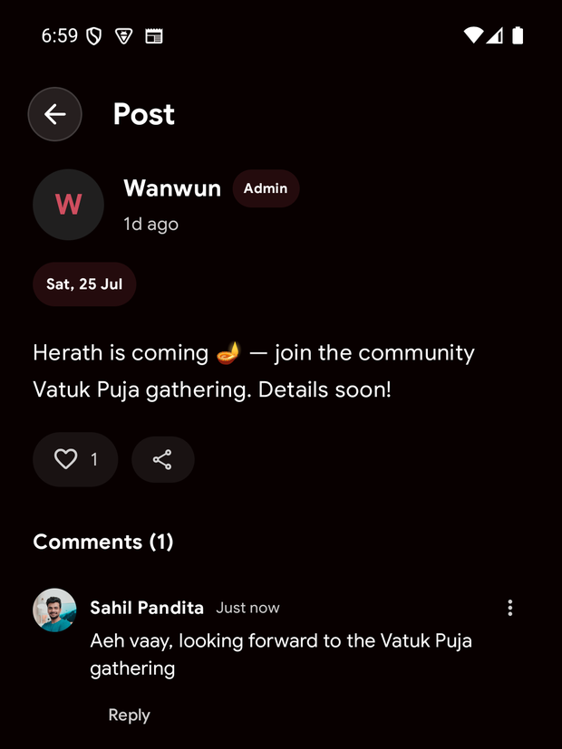
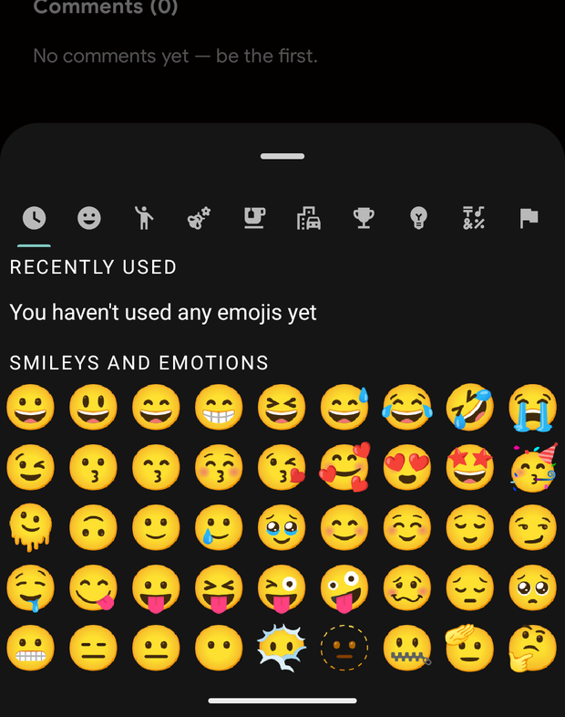

Wanwun
WanwunSay Namaskar to the Baithak
A community corner, now inside Wanwun.
Wanwun has always been about staying close to our roots — the Panchang, the festival dates, the bhajans. The Baithak adds the piece that was missing: each other. It's a calm, ad-free corner inside the app where the Kashmiri Pandit community can gather, share a word, and stay connected — wherever in the world we've settled.
One place for the community
Open the Baithak and you'll find the community's noticeboard: festival reminders, gathering announcements, and the small moments that keep us in touch — like a Vatuk Puja invite for Herath, or a quiet welcome to the corner. It's one clean feed, newest first, with the most timely notes pinned to the top so nothing important slips by.

Read, react, and reply
Tap any post to read it in full. A tap of the heart is an easy way to say “I'm here.” And when you have something to add, the conversation happens right below — leave a comment, reply to someone, and keep the thread going. It feels like the corner of a room where everyone's caught up on the news.

Say it with a smile
Words don't always carry the warmth. The comment box has a full emoji picker built right in, so a 🙏 or a 🪔 is only a tap away — the little touches that make a message feel like it came from home.

The Baithak is a respectful, moderated space. A quick read of the community guidelines keeps it warm for everyone.
Come sit with us
The Baithak is live in Wanwun today. Update the app, open the Baithak tab, and say Namaskar.